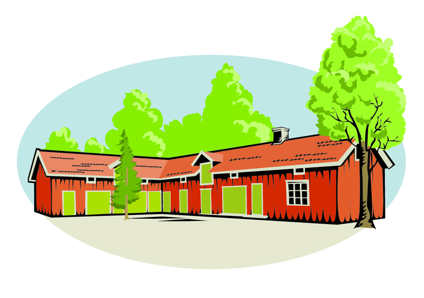
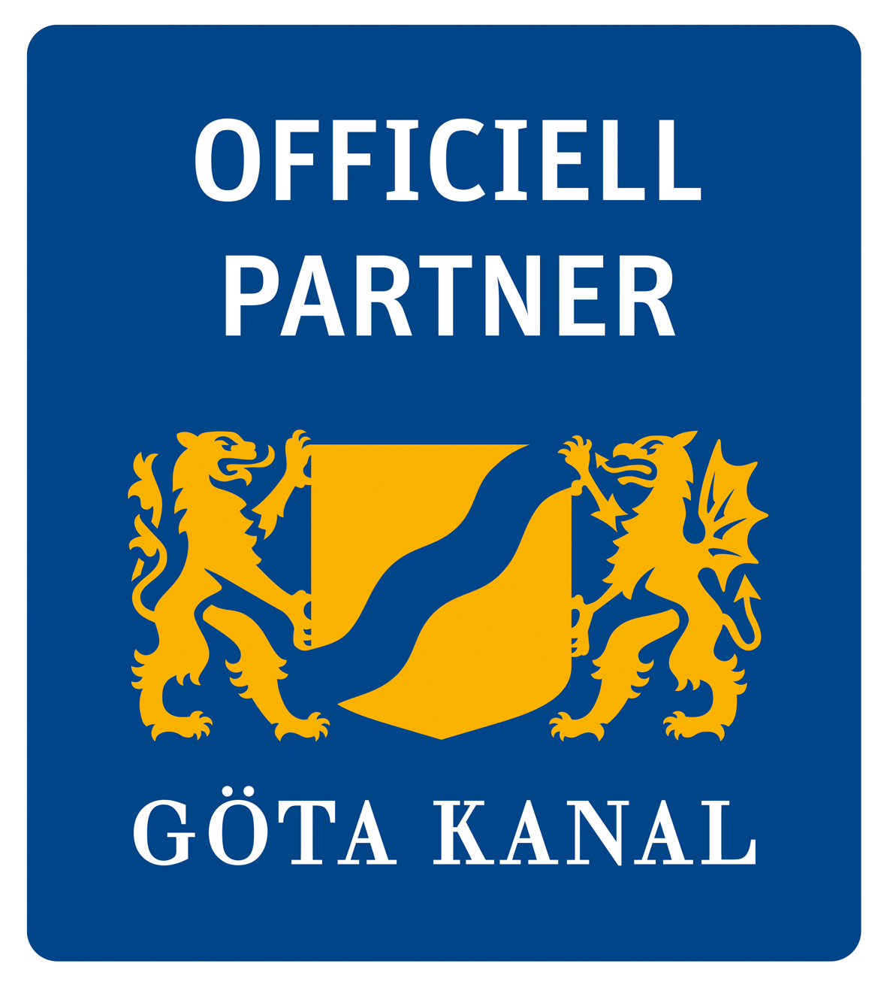

Senaste nytt
Våren i Visthuset
Just nu planerar vi många evenemang som kommer under våren 2014. Datum är satta för Konstrundan 3/5 och Sveriges längsta loppis 10/5.
Sommaren rivstartar med 6:e juni-firandet i Gästhamnen och fortsätter sedan med Pingstmarknad samma helg.
I samband med de olika aktiviteterna kommer vi presentera massvis av hembakade nyheter i caféet. Bland annat nya sorters grillade smörgåsar, kakor och konfekt.Välkommen!

Sveriges längsta loppis - Töreboda
Den 10 maj arrangeras Sveriges längsta loppis utmed Göta Kanal.
I Töreboda hittar du loppisen på Visthuset!
Passa på att gör en vårrensning och ta med dig saker som vill hitta en ny ägare. Du behöver inte förboka plats och det är gratis att sälja. Ta med ett bord eller sälj från bakluckan! Begränsat antal platser inomhus.
Bord finns att hyra. 100:- / bord (förbokas)
I Caféet har vi massvis av hembakade nyheter. Bland annat nya sorters grillade smörgåsar, kakor och konfekt.
Välkommen till Café Visthuset
I Töreboda hittar du loppisen på Visthuset!
Passa på att gör en vårrensning och ta med dig saker som vill hitta en ny ägare. Du behöver inte förboka plats och det är gratis att sälja. Ta med ett bord eller sälj från bakluckan! Begränsat antal platser inomhus.
Bord finns att hyra. 100:- / bord (förbokas)
I Caféet har vi massvis av hembakade nyheter. Bland annat nya sorters grillade smörgåsar, kakor och konfekt.
Välkommen till Café Visthuset